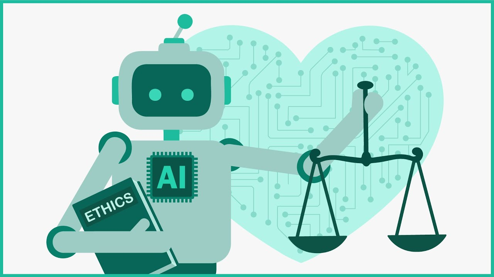

Ethical AI

Where do Ethics come from?
- Humans experience events that influence their ethics
- The influence is discounted by "munge distance"
- Influences decay over time
- Human ethics is the accumulation of decayed influences
Can AI Systems' Ethics use that Model?
- What events should be used?
- What is the discount for "munge distance"?
- What is the decay function?
- How can the influences be accumulated?
- How should this be represented?
AI Ethics in Action
- User's ethics?
- Society's ethics?
- AI system's ethics?